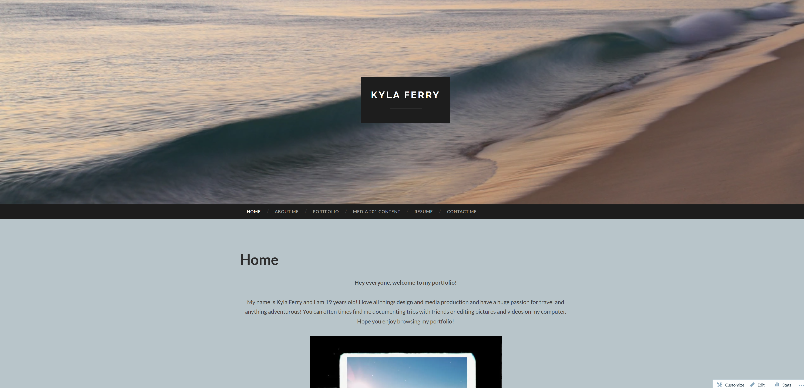
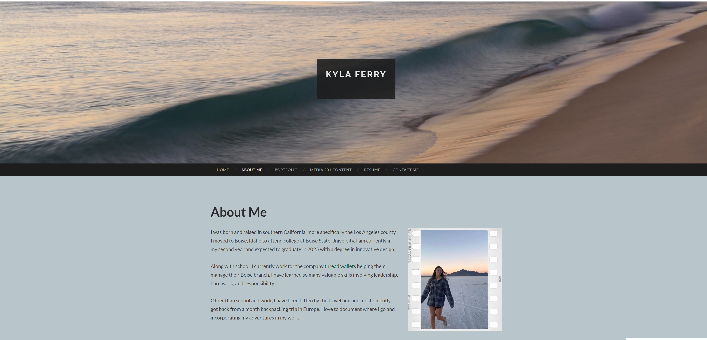

Through wordpress, I learned the importance of using appropiate layouts and designs. It was much easier to produce the vision I had in my head when working with wordpress becuase it was more design heavy rather than coding. I ran into some trouble with links and could have more effeciently created a contact page, linking my socials. Overall however, I really enjoyed working with this program and am happy with the outcome. Below are two example pages from my wordpress website whuch you can also find here
 